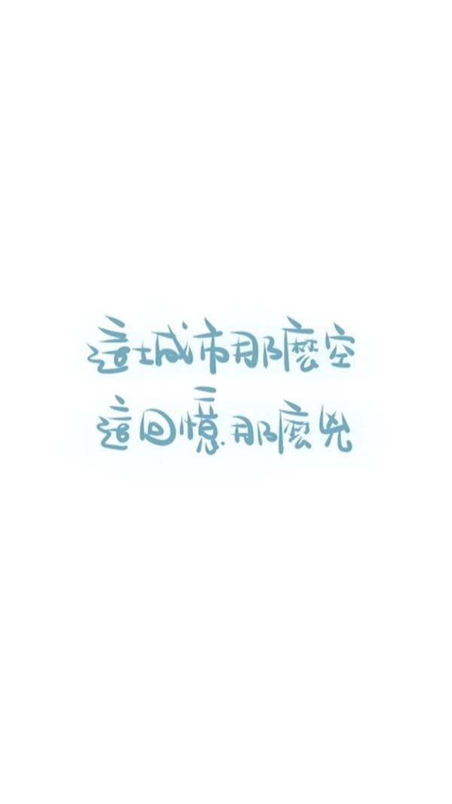

思想
典型相关分析是研究两组变量整体之间相关关系的多元分析方法，它借助主成分分析降维的思想，分别对两组变量提取主成分，且使从两组变量提取的主成分之间的相关程度达到最大，而从同一组内部提取的各主成分之间互不相关，用从两组分别提取的主成分的相关性来描述两组变量整体的线性相关关系。
概述
1)仍用相关系数来描述相关性
2)从$X$中提取部分信息$U$，从$Y$中提取部分信息$V$
3)$Ｕ,Ｖ$均为$X,Y$的线性组合，即
$U=a_1X_1+a_2X_2+…+a_pX_p$
$V=b_1Y_1+b_2Y_2+…+b_qY_q$
4)让$\rho_{U,V}$越大越好，此时把$U,V$称为（第一对）典型相关因子
5)去除$U,V$的影响后，类似的可以获得第二对，第三对，…典型相关因子，并且它们的相关程度越来越小
总体典型相关和典型变量的数学理论
先来求解第一对典型相关因子，注意，按照数学语言，这里本应该用$U_1,V_1$来表示，但是为了书写方便，我们以直接以$U,V$来表示了
对于$X与Y$的一对线性组合
$$U=a_1X_1+a_2X_2+…+a_pX_p＝a’x$$
$$V=b_1Y_1+b_2Y_2+…+b_qY_q=b’y$$
目标函数是$U和V$的相关系数的极大值，即
$$max\rho_{U,V}=\rho_{a’x,b’y}$$
其中$a’,b’,x,y$形式如下
$$a’=[a_1,a_2,…,a_p]$$
$$b’=[b_1,b_2,…,b_q]$$
$$x=[X_1,X_2,…,X_p]’$$
$$y=[Y_1,Y_2,…Y_q]’$$
所以我们要求解使得目标函数极大时的$a’和b’$这两个系数向量。
$x,y$的协方差矩阵为
$cov[x,y]’=\sum=[\begin{matrix}
\Sigma_{11} & \Sigma_{12} \
\Sigma_{21} &\Sigma_{22}
\end{matrix} ]$
(注意：这里是2*2的分块矩阵，格式显示有误)
一般的，$U和V$之间的相关系数为
$$\rho=\frac{cov(U,V)}{\sqrt{varUvarV}.}=\frac{cov(a’x,b’y)}{\sqrt{var(a’x)var(b’y)}.}$$
这里限定取标准化的随机变量$U和V$(编程时直接对数据标准化一下就行了，总体不只有一个U,V,所以可以标准化，即减均值除以标准差)，所以我们的目标函数就简化为如下形式
$$\rho=cov(U,V)＝cov(a’x,b’y)=a’cov(x,y)b=a’\Sigma_{12}b$$
约束条件为
$$var(U)=var(a’x)=a’\Sigma_{11}a=1$$
$$var(V)=var(b’x)=b’\Sigma_{22}b=1$$
接下来我们就可以利用拉格朗日乘数法对该问题进行求解了
[问题]
$$max\rho_{U,V}=a’\Sigma_{12}b$$
$$st.$$
$$a’\Sigma_{11}a=1$$
$$b’\Sigma_{22}b=1$$
[求解]
知识回顾之矩阵求偏导
$a’=[a_1,a_2,…,a_n]，X=[x_1,x_2,…,x_n]$
则$a’X=a_1x_1+a_2x_2+…+a_nx_n$
所以$\frac{\partial{a’X}.}{\partial{x}.}=[\frac{\partial{a’X}.}{\partial{x_1}.}],\frac{\partial{a’X}.}{\partial{x_2}.},…,\frac{\partial{a’X}.}{\partial{x_n}.}]’=[a_1,a_2,…,a_n]’$
所以可以得到以下公式:
$\frac{\partial{a’X}.}{\partial{x}.}=a$
或者
$\frac{\partial{X’a}.}{\partial{x}.}=a$知识回顾之二次型求偏导
$\frac{\partial{X’AX}.}{\partial{x}.}=2AX$
拉格朗日乘数法求解
$L(a,b,\lambda,\mu)=a’\Sigma_{12}b-\frac{\lambda}{2}(a’\Sigma_{11}a-1)-\frac{\mu}{2}(b’\Sigma_{22}b-1)$
求偏导，得：
$\frac{\partial{L}.}{\partial{a}}=\Sigma_{12}b-\lambda\Sigma_{11}a=0$
$\frac{\partial{L}.}{\partial{b}.}=\Sigma_{21}a-\mu\Sigma_{22}b=0$
$\frac{\partial{L}.}{\partial{\lambda}.}=a’\Sigma_{11}a-1=0$
$\frac{\partial{L}.}{\partial{\mu}.}=b’\Sigma_{22}b-1=0$
记前两个式子为(1)(2)式，后两个为(３)(４)式
由(3)(4)得到$a’\Sigma_{11}a=1$，$b’\Sigma_{22}b=1$现在来处理(１)(２)式：
由（１）得，$\Sigma_{12}b=\lambda\Sigma_{11}a$，两边同时左乘$a’$得，$a’\Sigma_{12}b=\lambda a’\Sigma_{11}a=\lambda$
同理对（２）进行操作，有，$\Sigma_{21}a=\mu\Sigma_{22}b$，两边同时左乘$b’$，得到$b’\Sigma_{21}a=\mu b’\Sigma_{22}b=\mu$观察发现，$a’\Sigma_{12}b$和$b’\Sigma_{21}a$互为转置，前者等于$\lambda$，后者等于$\mu$，所以有$\lambda=\mu$，再看目标函数，发现前者还是目标函数的表达式，所以要使得目标函数最大，也就是使得$\lambda＝\mu$达到最大，不妨把(1)(2)统一为$\lambda$表示，则（１）（２）两式可化为:
$\Sigma_{12}b-\lambda\Sigma_{11}a=0$ ……….(1’)
$\Sigma_{21}a-\lambda\Sigma_{22}b=0$ ……….(2’)由(1’)得，$\frac{1}{\lambda}\Sigma_{12}b=\Sigma_{11}a$，进而得$a=\Sigma_{11}^{-1}(\frac{1}{\lambda}\Sigma_{12}b)$，代入(2’)得，$\Sigma_{21}(\Sigma_{11}^{-1}(\frac{1}{\lambda}\Sigma_{12}b))=\lambda\Sigma_{22}b$，即$\Sigma_{21}(\Sigma_{11}^{-1}(\Sigma_{12}b))={\lambda}^2\Sigma_{22}b$，即${\Sigma_{22}.}^{-1}\Sigma_{21}(\Sigma_{11}^{-1}(\Sigma_{12}b))={\lambda}^2b$，记${\Sigma_{22}.}^{-1}\Sigma_{21}(\Sigma_{11}^{-1}(\Sigma_{12}))=H$，则有$Hb={\lambda}^2b$
可以看出，${\lambda}^2$是$H={\Sigma_{22}.}^{-1}\Sigma_{21}(\Sigma_{11}^{-1}(\Sigma_{12}))$的特征值，$b$是${\lambda}^2$的特征向量，结合之前分析的结果，要使得目标函数达到最大，就是使得$\lambda$达到最大，那么此时当${\lambda}^2$达到最大时，$b$就是$H$的最大特征值(${.{\lambda}^2}_{max}$)对应的特征向量.
同理可以得到，$a$是$H’$的最大特征值对应的特征向量，过程如下：由(2’)得，$\frac{1}{\lambda}\Sigma_{21}a=\Sigma_{22}b$，进而得$b=\Sigma_{22}^{-1}(\frac{1}{\lambda}\Sigma_{21}a)$，代入(1’)得，$\Sigma_{12} \Sigma_{22}^{-1}(\frac{1}{\lambda}\Sigma_{21}a)-\lambda\Sigma_{11}a=0$，即$\Sigma_{12} \Sigma_{22}^{-1}(\Sigma_{21}a)-{\lambda}^2\Sigma_{11}a=0$，即有${\Sigma_{11}}^{-1}\Sigma_{12} \Sigma_{22}^{-1}(\Sigma_{21}a)={\lambda}^2a$ ，记$H’={\Sigma_{11}}^{-1}\Sigma_{12} \Sigma_{22}^{-1}(\Sigma_{21})$，即有$H’a={\lambda}^2a$
此时的${\lambda}^2$是$H’$的特征值，$a$是${\lambda}^2$对应的特征向量
要求最大的$\lambda$，所以$a$为最大特征值对应的特征向量.
现在来观察一下$H＝{\Sigma_{22}.}^{-1}\Sigma_{21}(\Sigma_{11}^{-1}(\Sigma_{12}))$和$H’＝{\Sigma_{11}.}^{-1}\Sigma_{12} \Sigma_{22}^{-1}(\Sigma_{21})$
不妨记${\Sigma_{22}}^{-1}\Sigma_{21}=A$，
${\Sigma_{11}.}^{-1}\Sigma_{12}=B$
则在求解$b$时，即求$AB$最大特征值(${\lambda}^2$)对应的特征向量
在求解$a$时，即求$BA$的最大特征值(${\lambda}^2$)对应的特征向量
求解下一对
由上一步，我们求得了$U=a’X$和$V=b’Y$，称$U和V$为第一对典型相关因子，那么接下来，我们可以一次求解第二对，第三对，．．．
但有一点需要注意的是，第二对的变量应该与第一对的变量不相关
比如在求解第二对的时候，即${\rho}_{U_2,V_2}=cov(a’_2X,b’_2Y)$且$var(U_2)=1,var(V_2)=1$
需要满足
$cov(U_1,U_2)=cov(V_1,V_2)cov(U_1,V_2)=cov(U_2,V_1)=0$
其实，这里有个结论，就是：$a_2,b_2$就是之前求解第一对时的$AB,BA$的第二大特征值对应的特征向量，依次下去即可求解全部对
酱紫，我们通过求解第一次的那个矩阵的特征值以及特征向量就能求解全部对了，也就是能求出全部的典型相关因子了.
后记
之前在自己啃$SVM$的时候所用到的求解方法与此类似，特此记录
参考
https://blog.csdn.net/mbx8x9u/article/details/78824216
https://blog.csdn.net/mbx8x9u/article/details/78824216
